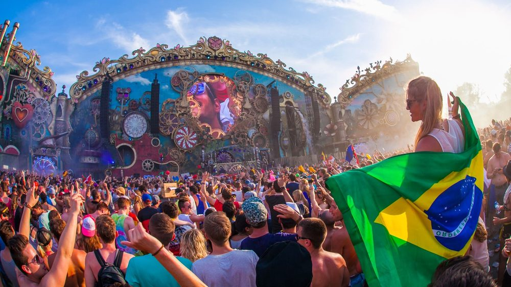
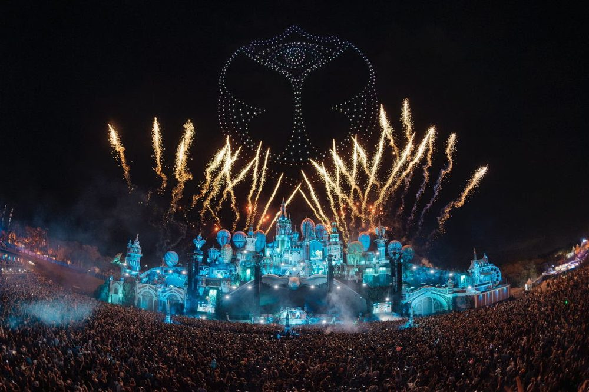
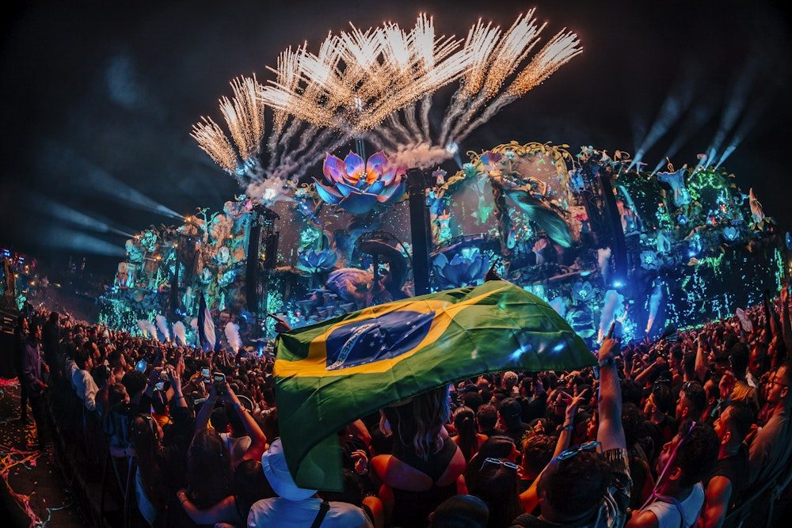
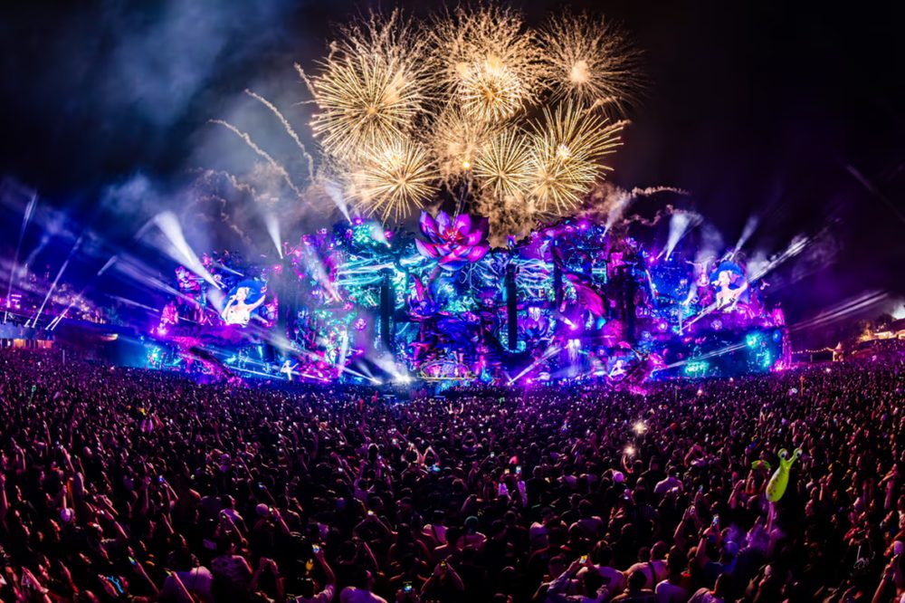

Energía latinoamericana
Una intensidad que se siente desde la primera fila hasta el fondo del terreno, sin importar la hora del día.
El universo de Tomorrowland cruza el Atlántico. En Itu, a las afueras de São Paulo, la energía latinoamericana se une a la misma escenografía imposible y a la misma comunidad global.
Tomorrowland Brasil nació para llevar el universo del festival a Sudamérica, sin perder ni un detalle de lo que lo hace especial: una escenografía diseñada desde cero, un cartel internacional y ese sentimiento de comunidad que atraviesa cualquier idioma.
El público brasileño responde con una energía propia — banderas, colores y una euforia que se siente en cada rincón del recinto, de día y de noche.

Una intensidad que se siente desde la primera fila hasta el fondo del terreno, sin importar la hora del día.
Una pieza central diseñada específicamente para Brasil, con su propia identidad visual y narrativa.
Cada edición suma más gente que descubre por primera vez la sensación de estar en Tomorrowland.

Cientos de drones dibujan el logo del festival sobre el escenario principal.

La bandera brasileña ondea entre luces y flores gigantes en una de las noches más recordadas.
Con el sol de frente o bajo las luces del escenario, la energía se vive igual de intensa.

Flores gigantes, luces bioluminiscentes y fuegos artificiales transforman cada noche.